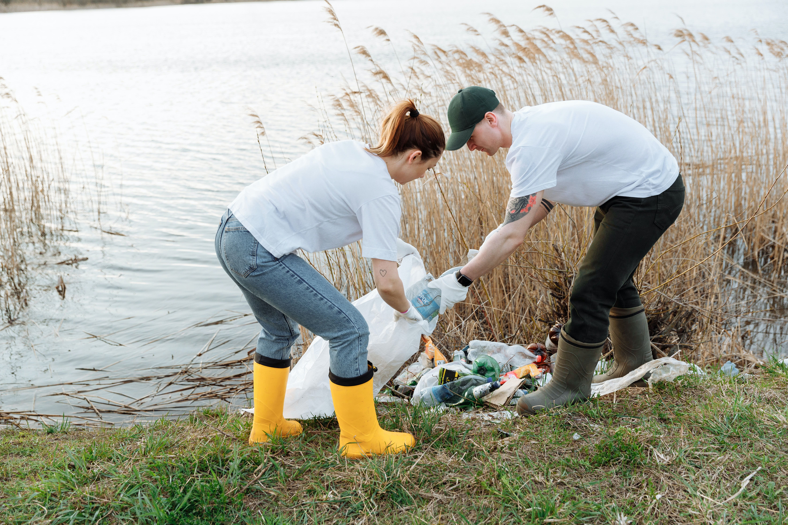

HELP US...BY YOUR CONTRIBUTION .... IT MAKES OUR WATER BODIES CLEAN.
YOUR SINGLE CONTRIBUTION MAKES A WATER BODY CLEAN
POLLUTION FREE WATER 62% TODAY...!
MAKE THE WATER TURNS BLUE OR
YOU''LL HAVE BROWN WATER SOON......
Water pollution is a serious issue that affects millions of people every day. It's
important to discuss because it affects human health, animal health, and the environment.....
POLLUTED WATER
The Polluted water source .....The water is polluted by domestic and plastic waste mixed
in water .....
YOUR CONTRIBUTION
Your contribution reaches us and it helps us to make the polluted water bodies gets
identified easier ......For your contribution there will be reward .....

OUR VOLUNTEER TEAM
Our Volunteer Team will be start cleaning the water bodies and remove the waste plastic
bottles.....
WATER POLLUTION
When we think of water pollution, we might envision rivers and lakes being filled with trash and debris, or
perhaps an oil spill that washes up on shore. But water pollution goes beyond these things: it can also be
caused by agricultural runoff from fertilizer or pesticides, as well as by untreated sewage from cities.
The effects of water pollution are far-reaching. People who drink polluted water may develop respiratory
problems such as asthma and pneumonia; others may develop skin irritation or rashes due to exposure to toxic
chemicals in the air. The environment itself can be damaged by water pollution—for example, fish die offs
due to toxic algae blooms often result from polluted waterways.
Water pollution is a growing problem due to the increase of waste in our oceans. The ocean is an essential
part of life for humans, animals and plants. It provides us with food, oxygen, water and shelter. Pollution
in the form of sewage and garbage can lead to diseases such as gastroenteritis, cholera and typhoid fever.
The world's oceans are already polluted with plastic bags, bottles, packaging and other forms of waste that
are used once then thrown away into the ocean. This causes an increase in weight on sea turtles' shells
which makes it difficult for them to swim or dive underwater causing them to drown as they struggle against
their weight while trying to escape predators like sharks or even plastic bags themselves!
It has been estimated that by 2050 there will be more plastic than fish in our oceans. This means that over
time we will lose many species of marine animals completely because they cannot survive without oxygen from
fish breathing through their gills which are made from algae living inside their bodies!